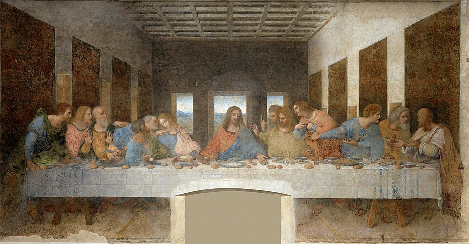
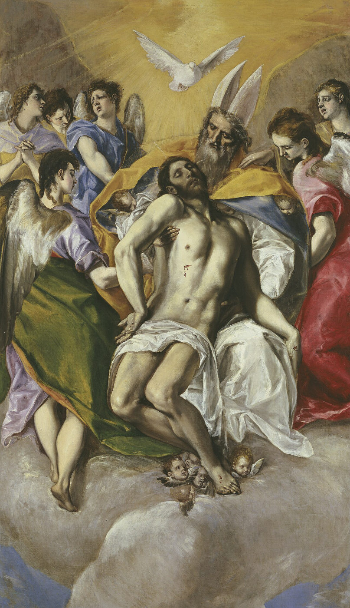
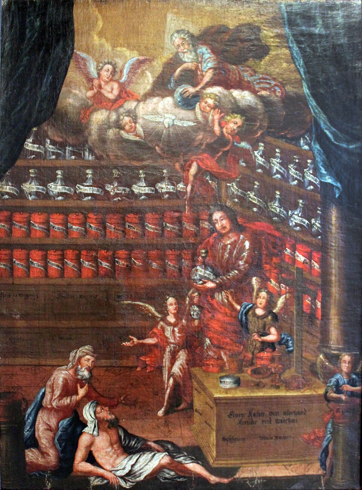
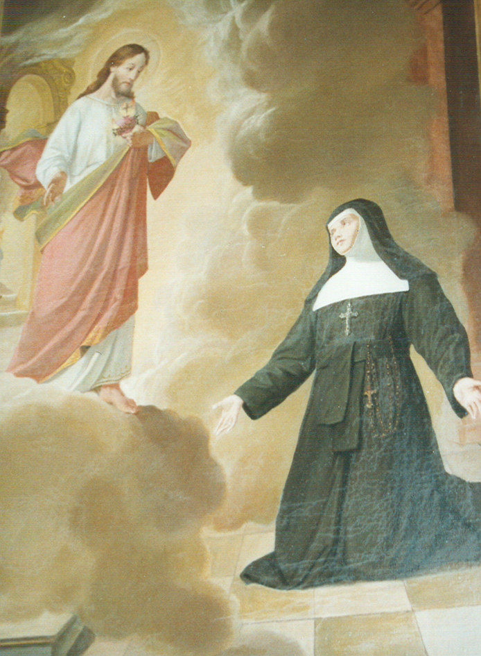
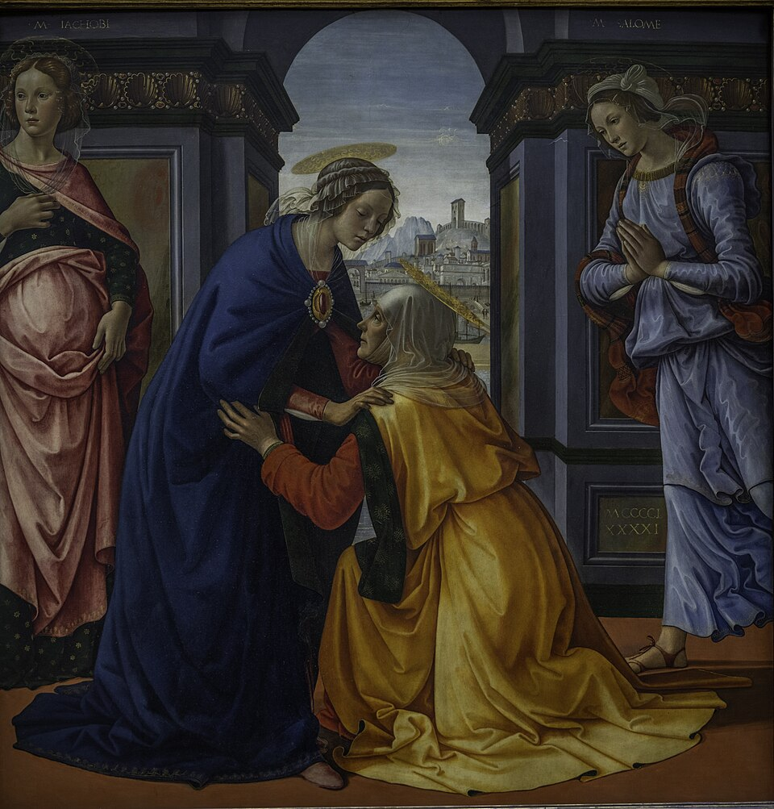
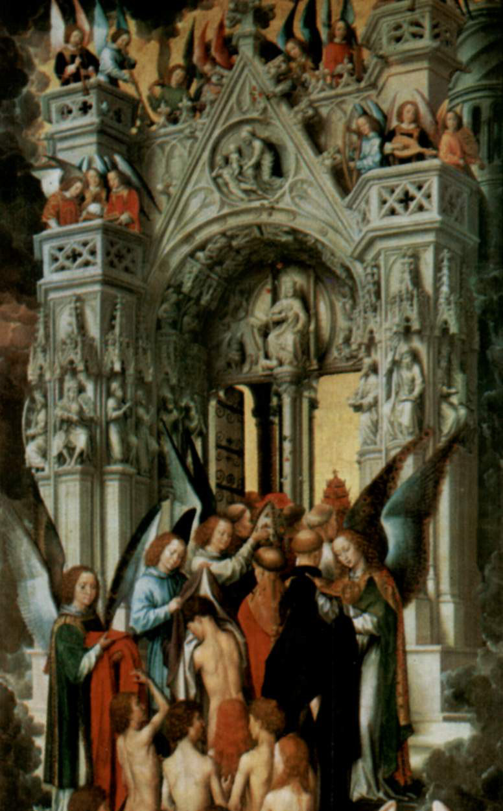
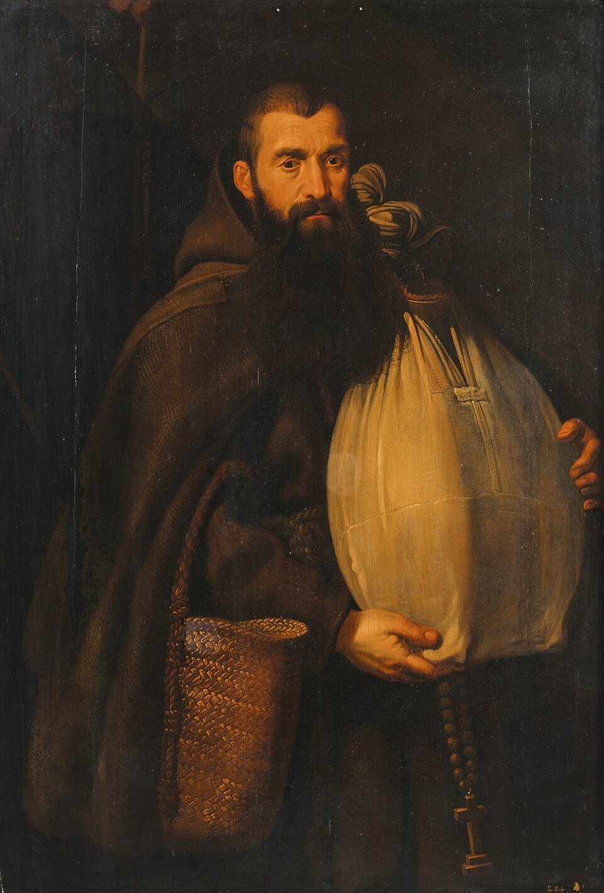

God Reward You
The Most Beautiful and Most Powerful Thanks
I give thanks to thee, O Lord my God, with my whole heart, and I will glorify thy name for ever. Ps 86,12
This brochure of the Marian Movement of Priests and Laity invites us to rediscover the venerable “God reward you” as the most beautiful and most powerful thanks. It deals with the reply “God bless you,” with the practice of gratitude toward God and men, with the stream of grace of the Holy Mass, with the key to the Most Sacred Heart of Jesus and with the grace of the moment, and it presents grateful saints, such as the Capuchin brother Felix of Cantalice.
Contents
- “God Reward You” on the Scales
- Gratitude Enriches Our Life
- The Most Beautiful and Most Powerful Thanks
- Do Not Forget the Good Intention
- A Light for Our Conscience
- A Powerful Remedy
- The Stream of Grace of the Holy Mass
- The Key to the Most Sacred Heart of Jesus
- Giving Thanks with the Mother of God
- The Grace of the Moment
- The Great Litany of Thanksgiving
- Brother Deogratias
“God Reward You” on the Scales
The following true event took place in the year 1852 in the little town of Albendorf in the Glatz region, then still Austrian.
A poor working man’s wife, whose husband had been lying sick in bed for quite some time, wanted to ask the butcher for a piece of meat for a hearty soup. She put her request to the master butcher. But he shook his head and said: “I don’t like customers like that. I want to see hard cash.” “I don’t want it for nothing,” said the little old woman. “I’ll give you a God reward you; that weighs plenty.” Mockingly the butcher said: “What will your God reward you weigh, we’ll see about that right away.” He takes a piece of paper, writes on it the words God reward you and lays it in one pan of the scales. But behold, he cannot believe his eyes. With a jerk this pan is pulled down. Quickly he cuts a piece of meat from the next table and lays it in the other pan. But it does not move. A second piece, a third piece he lays on it, indeed all the meat that he has lying on the table. But he does not succeed in bringing up the pan with the God reward you. It stays pulled down; the other, with all the meat, stays up. The butcher cannot get over his astonishment.
He shakes his head and says: “This is beyond belief, but I see it with my own eyes: the God reward you weighs more than all my meat.”
He gave the surprised little woman a handsome piece and from then on thought very highly of a God reward you.
In my childhood I heard this story told again and again. It is attested by those who lived through it in the days of our great-grandfathers.1
Because the whole world before thee is like a speck that tips the scales. Wis 11,20
1 Fr. Bonaventura Blattmann OFM, Vergelt’s Gott, Imprimatur: Augsburg, May 30, 1938, vic. gen. Dr. Eberle.
Gratitude Enriches Our Life
The frequency with which Holy Scripture calls us to gratitude and thanksgiving leaves no doubt about its importance for our spiritual life. Many Psalms are positively overflowing with expressions of thanks, and St. Paul never tires of calling the community to give thanks.
God embraces grateful souls with a special preferential love and showers them with His favors, for to every sincere thanks that we offer to God, our greatest Benefactor, He at once attaches a new grace, corresponding to our personal needs. Interesting in this connection is also the fact that the words thanks (gratias) and grace (gratia) come from the same Latin root.
St. Thomas Aquinas explains the connection between grace and thanks as follows: Gratia is the self-communicating goodwill of God, by which He makes a person pleasing to Himself, and the gratiarum actio is the response, called forth in man by grace, to this undeserved gift.
Only when grace becomes thanks has it reached its goal. Ingratitude, on the other hand, proves to be disfavor. How painful it is for us when our efforts to do good to our fellow men meet with ingratitude or with a superficial attitude of taking it for granted. Yet God is wounded far more by the base ingratitude of His creatures. Already in the Old Testament the Book of Wisdom says: to make it known that one must rise before the sun to give thee thanks, and must pray to thee at the dawning of the light; for the hope of an ungrateful man will melt like wintry frost, and flow away like waste water. (Wis 16,28-29)
And how sad the question of our Savior sounds after the healing of the ten lepers: Was no one found to return and give praise to God except this foreigner? (Lk 17,15-18)
The German word danken (to thank) comes from denken (to think). Grateful is the one who thinks of benefits received instead of forgetting them, and who also shows this not-forgetting in word and deed.
As recipients of gifts we very often reach our limits. That we can never repay God, even approximately, for all the good He does us at every moment is well known to us, but is it not also the case that in many situations of our life our expressions of thanks to our benefactors likewise fall far short of what we have received? Precisely in such moments it is an immensely relieving blessing, with the popular form of thanks “God reward you,” to ask the Father in heaven to repay our benefactors for what we were allowed to receive from them.2
My parents I commend to You, dear God, protect them for me.
Repay, O God, since I cannot, the good that they have done for me!
2 Cf. Fr. Dr. Bernward Deneke FSSP, Informationsblatt der Priesterbruderschaft St. Petrus, Aug./Sept. 2025.
The Most Beautiful and Most Powerful Thanks
The saintly Franciscan Father Bonaventura Blattmann (1860-1942) writes in his little booklet entitled Vergelt’s Gott about the immeasurable value of gratitude practiced for God’s sake. Moving is the childlike and loving dialogue between this mystically graced religious and our Lord Jesus Christ.3
3 Fr. Bonaventura was Provincial of the Bavarian Franciscans from 1903 to 1912. After a serious illness he devoted himself until his death to the Guard of Honor of the Immaculate Heart of Mary, which he had founded, especially also through the distribution of little booklets. In 1932 he founded the Archconfraternity of the Most Sacred Heart of Jesus and the Immaculate Heart of Mary.

The Last Supper
The Law of Gratitude
Jesus: Dear soul, have you ever thought about gratitude?
Soul: No, dearest Jesus. I beg You, teach me. Behold, I hunger and thirst for the words of Your love.
Jesus: Know, good soul, that the law of gratitude is already laid into the nature of man. That is why even many unbelievers and pagans practice gratitude. Indeed, you have already experienced that even individual animals are grateful and attached to their benefactors. On the other hand there are people who let themselves be guided more by their passions than by the law of nature.
But since I am the God of goodness and mercy and do not will that anyone be lost, I have, in both the Old and the New Testament, often and in clear words reminded men of the duty of gratitude. My love for souls went even further. I taught them gratitude toward God and toward men also by My example. Repeatedly it is said of Me: “Jesus lifted up His eyes to heaven and gave thanks.”
But know, beloved soul, that I too, in the Most Blessed Sacrament of Love, give thanks to the Heavenly Father for all the love, grace and mercy that He bestows on souls in a wholly undeserved way. In the Most Blessed Sacrament I also offer to the Heavenly Father the thanks of reparation and atonement for all those souls who do not give thanks and who do not even want to understand that they owe God the holiest thanks.
Consider further, dear soul, that in the Most Blessed Sacrament I am in a certain way Myself grateful to the souls who come with good will to visit Me, to testify their love to Me, to console Me and to make reparation and atonement to Me for those souls who do not remember Me.
I show Myself grateful to these good souls by consoling them, by enlightening them, by increasing love and grace in them, by giving them strength for the struggle against temptations, by filling them with holy joy for the exercise of their calling and by granting them great patience and strength in the cross and in suffering, so that they may bear it meritoriously for eternity. But now I ask you, dear soul: Will you follow Me in gratitude?
Soul: Gladly and full of love will I do this. But I beg You, dearest Jesus, tell me how I am to practice gratitude.
Never, O Lord, can I thank You enough.
Let every breath give thanks to You.
Let every heartbeat give thanks to You,
until the last beat on the last day.
Then every thought will thank You
with an everlasting thanks, thanks, thanks!

The Most Holy Trinity (El Greco)
Practicing Gratitude toward God
Jesus: Take well to heart, dear soul, that your whole life is filled with God’s benefits. Every breath is already a gift of God. Greater and more precious still are the countless supernatural graces that come to you daily. Rightly, therefore, the Holy Church in the Preface of the Holy Mass calls on the faithful always and everywhere to give thanks to God.
Soul: But how, dearest Jesus, am I to speak when I want to thank God?
Jesus: In thanks to God there are many degrees. The simplest expressions of thanks are: I thank You, O God. Or Thanks be to God. Behold, these words of thanks alone make your soul not only far more pleasing to God, but your soul is also adorned with a series of virtues. With the virtue of gratitude you also practice the virtue of faith, of love, of humility. With every act of thanks you therefore become far more pleasing to Me. But if you go a little further and say when giving thanks: To God be offered praise, glory and thanks, then together with the acts of virtue mentioned before you also offer God praise. Thereby your soul is once again enriched far more.
Incomparably more valuable becomes your thanks when you let the activity of the will prevail in giving thanks. You do this when, on given occasions, you say: To God be offered, in the name of all souls and for all souls, praise, glory and thanks. If you do it so, then you do not thank by yourself alone, but you offer to Me the thanks of all souls and at the same time make reparation and atonement to Me for all those souls who do not thank Me. Thereby, however, you obtain in a high degree God’s love and good pleasure and draw down God’s mercy upon souls.
Soul: But how, dearest Jesus, must I do it if I want to thank You, the Father and the Holy Spirit always and everywhere?
Jesus: This question of yours delights My Heart, and joyfully I tell you that the activity of the will is the means to it. For this purpose awaken often the following act of the will: To the Most Holy Trinity be offered, infinitely many times, always and everywhere, in the name of and for all souls, praise, honor, glory and thanks for everything, from eternity to eternity. With this Everlasting Act of Thanksgiving you offer Me thanks in the name of and for all souls not merely once, but infinitely many times, and this thanks of yours will continue and go on working for eternity, because God looks at the will in everything.
Soul: O eternal Love, how good You are, that You have taught me so lovingly about gratitude toward God.
O please, tell me also how I am to thank men.
Practicing Gratitude toward Men
Jesus: Note well, God-loving soul, that in gratitude toward men too there are many degrees, similar to thanks toward God. Worldly people and all those who let themselves be ruled by the spirit of the world practice gratitude from purely natural motives, for example because it is customary, or because it is proper to give thanks. Behold, such thanks draws after it only a purely natural reward. I do reward these souls for such thanks in various ways, but only in this world. But if you say thank you out of love for God, or because it is God’s will that you also be grateful to men, then you practice the virtue of gratitude from a supernatural motive. Behold, such an act of thanks I reward with supernatural, eternal goods. You grow in sanctifying grace and acquire merits for heaven. Incomparably more valuable, more pleasing to Me, more effective and more blessed, however, is the thanks of “God reward you.”
On “God Reward You”
Jesus: Remember well, dear soul, what I now tell you. If you give thanks with a God reward you, you ask Me to repay the soul for the good it did you. This request of yours I gladly grant and I reward the soul that did you good abundantly, according to the measure of its receptivity. But you yourself have still far greater benefit when you give thanks with “God reward you.” For through the “God reward you” you usually do the soul that did you good a far greater kindness than it did you. With this work of charity you delight My Heart, and I will reward you for it superabundantly. Besides the virtue of gratitude you practice the virtue of faith, of trust in God, of love of God and neighbor, of true piety, of prudence and of humility. From this you see that your soul after every sincere “God reward you” shines in a far more glorious adornment of virtue. But after every true “God reward you” you also receive a manifold increase of sanctifying grace, and everything you do afterwards has a far greater spiritual value than before. Do you see now, dear soul, what great spiritual profit the “God reward you” brings to your soul?
Nothing makes a man so worthy of divine gifts as constant gratitude toward God for the gifts received. St. Ignatius of Laconi
Grant, O God, that those who have done us good in body and soul may never lack the bread of heaven and of earth.
Soul: O my good Jesus, how deeply it pains my soul that I have suffered so much manifold harm because I so often contented myself with purely worldly thanks. In future, however, I will in all cases say only “God reward you.” O Jesus, please bless this resolution of mine.
On “God Bless You”
Jesus: With great love I fulfill your request. But, dear soul, do not stop halfway, but always give also to the “God reward you” the fitting reply. It is “God bless you.” If you answer the soul who says “God reward you” to you for something with a “God bless you,” then the blessing of God is granted to both souls in abundance.
O, if men only knew how much My Heart longs to bestow graces, blessings and benefits on souls, they would return this love of Mine. But only few have a desire for it. With “God reward you” and “God bless you” two souls give Me the joy of asking Me, in love, for one another. With these mutual petitions both souls practice a spiritual work of mercy. Truly, with joy I grant the petitions of both souls, and I set no limit either to the reward or to the blessing, so that in every way they far surpass all earthly rewards. But the gain in grace and virtue, which both souls obtain for themselves through their petitions, is still far more precious.
Increasing the Value of “God Reward You”
Jesus: Since I see, dear soul, your heart full of longing to give Me much joy with the “God reward you” and with the “God bless you,” I want to make you aware how you can make the effects of both petitions far greater still.
Soul: O Jesus, is there then anything greater than what You have told me about the “God reward you”?
Jesus: Certainly, My child, the means to it is your free will. In the free choice of your will you can simply say “God reward you.” But you can also say: “God reward you a thousand times.” With the latter you ask Me to repay the gift not merely once, but a thousandfold. With this manifoldly increased petition you give Me far greater joy than with the simple “God reward you.” Therefore the value and effectiveness of the thousandfold “God reward you” are also far greater. As great and as pleasing to Me as this strengthened petition is, there is nevertheless a certain limitation in it. Do not be content with it, therefore, but add to the “God reward you” the little word “forever.” If you follow this counsel, you not only give Me joy, but you also honor Me as truly almighty, eternally good and merciful God. But you also render to the soul whom you thank with a “God reward you forever” an incomparably greater work of mercy than if you thank with a “God reward you a thousand times.” Quite the same holds also of “God bless you forever.”
But you can make the “God reward you” and the “God bless you” still far more precious, more valuable and more meritorious. The means to it is the great Good Intention.
Awaken, therefore, for your whole life the act of the will always to say, in the name of all souls and for all souls, “God reward you forever” and “God bless you forever.” With this act you offer Me the thanks of all men, even of those who never thank Me. But so that this great act of the will of all-embracing thanks may not grow slack in you, I advise you to renew it often. But also let no occasion to practice mercy pass by, so that you often receive a “God reward you forever” and “God bless you forever.” If all souls acted so toward one another, not only would love increase far more in hearts, but the blessing of God would also unfold far more and come to an ever greater spiritual effectiveness.
Now that you, dear soul, are instructed about the high value of the “God reward you” and “God bless you,” take care that those souls too who know nothing of these springs of grace come to know of them. If you do this, you have a share in all the effects that proceed from your instruction.4
Giving thanks to the Father,
who has qualified us
to share in the inheritance of the saints in light. Col 1,12
4 Vergelt’s Gott, likewise pp. 26 and 27.
The Greeting of God
Jesus: Similar to giving thanks is also the case with greeting. The mutual greeting “Good day” profits souls nothing at all. But the sincere mutual greeting “God greet you” brings the greeters great profit, indeed eternal gain. I gladly hear the petition contained in this greeting and greet the souls by turning My love and grace toward them.
But still incomparably more blessed is the greeting “Hail Mary” or “Praised be Jesus Christ.”
Consider, dear soul, if even a “God reward you” or “God bless you” from a soul that is in the state of grace brings such great spiritual gain for eternity, how incomparably greater then is the reward for works of obedience, of love, of mercy, of self-denial and the reception of the holy Sacraments, as well as the patient bearing of the cross and of suffering, especially when these works are offered to Me in the name of and for all souls.
O dear soul, be zealous, therefore, and use every opportunity for good, and know that I am always ready to help you, to enrich you spiritually.
Soul: Forever be offered to You, O good Savior, in the name of and for all souls, praise, honor, glory and thanks for the exceedingly great goodness and mercy with which You have instructed me so lovingly. I am firmly resolved to follow Your will faithfully. O please, grant me Your grace for it.
We praise and bless You and give You thanks, O Most Holy Trinity, for all Your love, grace and mercy, from eternity to eternity.
Greet every saint in Christ Jesus. Phil 4,21
Do Not Forget the Good Intention
The German mystic Mechthild Thaller-Schönwerth (1868-1919) writes: Today the late Father Policarp was with me. He told me, as thanks for my freeing him from Purgatory: “Fast, pray, give alms, practice self-denial and obedience and you will be saved.
In everything you do, awaken the Good Intention to do it in the name of Jesus and with the sufferings of Jesus, and you will become holy and perfect.
If I could come back to life for only one more hour, I would do nothing else but speak about the immeasurable value of the ‘Good Intention.’
If I had known everything as I do now, I would have preached only: “Do not forget the Good Intention!
Through the constant Good Intention one learns perfect obedience, perfect contrition and comes to such a burning love that one can think of nothing else but God.
Through the constant Good Intention you will become holy.
I tell you this as thanks for your prayer!”5
Heavenly Father, I offer You everything that I shall ever do, sacrifice and suffer, united with the merits of Jesus and Mary, in the name of all souls and for all souls of the whole triple Church, with the will to act and to go on acting thereby for all eternity. Amen. Prof. Albert Drexel
5 Die Vertraute der Engel, Leben der Mystikerin Mechthild Thaller-Schönwerth, Jestetten 1992.
A Light for Our Conscience
According to St. Ignatius of Loyola, gratitude is an indispensable means for a good and fruitful examination of conscience. Where the rooms of the soul are illumined by daily practiced gratitude, the corrosive stirrings of ill humor and discontent, which ultimately spring from self-love, cannot gain the upper hand in our soul.
With the lamp of gratitude these “joy-robbers” can be tracked down and treated with the appropriate remedies. For it is hardly possible to be discontented and grateful at the same time. Seen from this angle, the practice of daily-performed grateful assent to the demands of God is the practice and proof of all virtues.
The mother of gratitude is humility, which gives it life, as it were, just as pride brings forth ingratitude. The sisters of gratitude are joy and contentment, who walk cheerfully with her through life and are accompanied by many further virtues.6
Get used to lifting your heart to God, in acts of thanksgiving, many times a day.
Because he gives you this and that. Because you have been despised. Because you haven’t what you need or because you have. Because he made his Mother so beautiful, his Mother who is also your Mother. Because he created the sun and the moon and this animal and that plant. Because he made that man eloquent and you he left tongue-tied… Thank him for everything, because everything is good. St. Josemaría Escrivá
6 Cf. Geist und Leben, Zeitschrift für Aszese und Mystik, Würzburg 1956, Heft 4, p. 286 f.
A Powerful Remedy
Precisely because God rejoices so much in the gratitude of His creatures, this so attractive virtue, with which we also enrich our fellow men, should be a matter close to our heart. Indeed there is hardly any medicine that refreshes, heals, strengthens the soul in a similar way and makes it receptive to the grace of God.
Likewise it defuses every form of negative influences, by disposing us to repay evil with good and to forgive all those who are not well-disposed toward us.7
The grace to be grateful in every moment of life, regardless of whether this moment bears traits of joy or of pain, is a fruit of faithful trust that in everything God works for good with those who love him. (Rom 8,28) Gratitude is the secret of a joyful and contented person, as the following story expresses:
In a lively group of Italians a young woman was suddenly so touched by the sight of a little old priest, whose face radiated an unusually deep joy, that she went up to him and asked him:
“Please forgive me for asking so directly, but why are you so full of joy? Do you have a special reason?” – “Oh no, it is rather my little secret. But I will tell it to you,” he said with a smile. “I am 95 years old. When I was five years old, I noticed with sadness that people were constantly complaining about the slightest thing, and that shocked me. I also felt that Jesus was sad about it. So I made a contract with Him and promised Him that for the next 100 years of my life I would never complain; that on the contrary I would praise Him for everything, for the good days as well as the bad, and that I would always honor the gift of life. And I must say, I have kept my promise. During all these years in which I have praised life, evil has not been able to harm me, and so I have steered clear of all demons!”
This nearly 100-year-old priest proved by his life that gratitude had made him a happy man. Grateful joy wants to communicate itself; it produces good deeds. If I have received so much, then I would like to share it with others. That is why grateful people are loved. They bring contentment and a certain cheerful serenity with them, even when they too have much to bear. One is simply glad to be with them, which increases happiness on both sides.
Whoever is not grateful quickly complains and criticizes, which only increases discontent and enlarges the evil. But when our heart is filled with thanks, then there is no room there for jealousy, envy, revenge, ill will, anger, greed, dejection or even despair. That is why gratitude is the best remedy when we experience in ourselves these vices from which we often suffer. Yes, one can truly say: gratitude is a key to happiness.8
Give thanks in all circumstances; for this is the will of God in Christ Jesus for you. 1 Thess 5,18
Come to Me, all who labor and are heavy laden, and I will give you rest. Call upon Me and I will hear you; seek, and you will find; ask, and you will receive; knock, and it will be opened to you. Picture inscription “Jesus as Physician and Apothecary”
7 Cf. Geist und Leben.
8 Cf. Triumph des Herzens, Dankbarkeit der Schlüssel zum Glück, No. 122.

Christ as Apothecary
The Stream of Grace of the Holy Mass
Jesus: Impress deeply upon yourself, dear soul, that the Holy Mass is the same sacrifice as the sacrifice that I offered on the Cross to My Heavenly Father for the redemption of the world. Like the sacrifice of the Cross, so too the sacrifice of the Mass is a sacrifice of infinite value, because I, equal God with the Father and the Holy Spirit, offer Myself in every Mass to the Heavenly Father.
The offering and hearing of the Holy Mass is therefore of all good works of the greatest value. As the sun shines brighter and benefits the earth more than all the stars together, so the offering and hearing of the Holy Mass is worth more than all the good works of all men taken together. All good works are only human works. But in the Holy Mass you offer up My Body and My Blood, indeed Myself, the only-begotten Son of God. Attend Mass, therefore, dear soul, as often as it is possible for you.
The Holy Mass is the most sublime sacrifice of adoration and praise. God is the eternal, infinite Majesty, the embodiment of all perfections, the Lord of heaven and earth. To Him is due infinite homage, praise and glory. But no creature, not even Mary, My dearest Mother, can of herself adore, praise and glorify God as He deserves. Only I, the Son of God, can honor, praise and glorify the Godhead worthily, and at every Mass I offer to God infinite adoration, praise and glory, just as is due to Him.
Through the sacrifice of the Holy Mass you too, dear soul, can offer to the divine Majesty infinite homage, adoration, praise and glory, as often as you attend it with the right intention. O rejoice and offer to God zealously the sacrifice of adoration and praise of the Holy Mass. The Holy Mass is the most perfect sacrifice of thanksgiving.
For the countless graces and benefits of which God unceasingly makes you a partaker, you cannot give thanks as God deserves. What you cannot do by your own strength, that I have made possible. In every Holy Mass I offer Myself, in the highest spirit of thanksgiving, to My Heavenly Father as a perfect sacrifice of thanksgiving. With Me and through Me you too, dear soul, at every Holy Mass which you attend in a spirit of thanksgiving, can give thanks to God in a perfect way.
Through Me and My Eucharistic Sacrifice you have become so rich that you can consecrate to the Heavenly Father an ineffably high gift in return in thanks for all His benefits. But gratitude is also a glorious virtue. Therefore you should give thanks to God not merely at the Holy Mass, but always and everywhere.
The Holy Mass is the fully sufficient sacrifice of reparation and satisfaction. Sin is an infinite offense against God. No man is capable of making full reparation and satisfaction for a single sin. Therefore I had mercy on mankind and offered Myself on the wood of the Cross to the Heavenly Father as reparation and satisfaction. This sacrifice of reparation and satisfaction I continue in the Holy Mass. […]
Jesus, Lord full of goodness, true Pelican, wash with Your blood what I have done wrong.
Of this blood a single little drop is enough for salvation; it blots out whatever outrage the earth has ever borne. St. Thomas Aquinas
As a sacrifice of satisfaction the Holy Sacrifice of the Mass effects the remission of the temporal punishments of sin which, after the forgiveness of your sins, you would have to expiate on earth or in Purgatory.
This remission of the punishments of sin is the more perfect, the freer you are from attachment to sins. The sacrifice of satisfaction of the Holy Mass you can also apply to the Poor Souls, indeed you cannot render them any better service than by attending Holy Mass for them or having it said for them.
The hour of the Holy Mass is truly a golden hour, because through it your whole day’s work is transformed into gold of eternal value.
God, who sees your desire, also lets the effect of the Holy Mass flow out upon you and your day’s work.
The Holy Mass also obtains for you, dear soul, many temporal benefits: blessing for your calling, consolation, courage, help in your needs. But since you do not know what serves your salvation, always add to your temporal petitions the condition: “If it is God’s will,” “If it serves for salvation.” In any case it is certain that in all your concerns you most surely find a hearing when at Holy Mass you unite your petitions with My intercession, for through My sacrifice they are fulfilled more surely, sooner and completely.
By hearing Holy Mass you grow in the love and grace of God, and therefore everything you do during the day has an incomparably greater value than if you had not attended Holy Mass. But if it is truly impossible for you to attend Holy Mass, then at least take part in it in wish and desire. Indeed, I advise you to make the intention of wanting to take part daily in all Holy Masses.9
O Jesus, through Your death and Your holy blood convert sinners, save the dying, release the Poor Souls from Purgatory, sanctify priests, religious and families.
9 Fr. Bonaventura Blattmann OFM, Gnadenströme, Imprimatur: August Vindel, May 4, 1934, vic. Gen. Dr. Eberle.

St. Margaret Mary Alacoque
The Key to the Most Sacred Heart of Jesus
In the octave of Corpus Christi in June 1675 Jesus showed St. Margaret Mary Alacoque His Divine Heart and said to her:
Behold this Heart which has so loved men that it spared nothing, even to exhausting and consuming itself, in order to prove its love to them. In return I receive from most of them only ingratitude, by the coldness and contempt they show Me in this Sacrament of Love. But what is most painful to Me is that even souls consecrated to Me treat Me so. Therefore I ask of you that on the first Friday after the octave of Corpus Christi a special feast be instituted in honor of My Most Sacred Heart. On that day one should receive Holy Communion and make amends to Me by a solemn act of reparation, in order to atone for the dishonor done to the Most Holy Sacrament of the Altar […].
By visiting Jesus again and again in the Sacrament of His love and thanking Him for all that He has done for us, we console His Most Sacred Heart and make reparation to Him for the ingratitude and indifference of so many souls. In this way we receive countless graces for ourselves and for all whom God has entrusted to our prayer. For gratitude is the key to the treasury of the Most Sacred Heart of Jesus.
Honor, love and thanks be to the Most Sacred Heart of Jesus! Indulgenced prayer
But even when we do not always have the opportunity to visit Jesus in the mystery of His love and to receive Him sacramentally, we always have the possibility, by means of our longing desire, of greeting Him in all the tabernacles of the world, adoring Him and receiving Him spiritually with loving gratitude.
St. Thérèse of the Child Jesus gave her sister by blood, Céline, this advice: What draws the most graces from God is gratitude. When we thank Him for a benefit, He is moved and hastens to give us ten more.
When we then thank Him again with the same sincerity, what an incalculable increase of graces!
I have experienced this myself: try it, and you will see. My gratitude is boundless for everything He gives me, and I prove it to Him in a thousand ways.
The humbler and more lowly a soul is, the more grateful, but also the stronger it becomes in the faith that even suffering is a gift of God.
I thank You, O my God! For all the graces You have granted me, most especially for letting me pass through the fiery trial of suffering. With joy I shall behold You on the last day, when You bear the scepter of the Cross. Since You have deigned to give me this so precious cross as my portion, I hope to be like You in heaven and to see the sacred wounds of Your Passion shine on my glorified body. St. Thérèse of the Child Jesus
Heavenly Father, through the Immaculate Heart of Mary we offer You, in the name of all souls and for all souls, in will infinitely many times and unceasingly, the Most Sacred Heart of Jesus, with all His love and all His sufferings, with His Precious Blood, with all His merits and with His whole Eucharistic life and work, in reparation and atonement for all our sins and for the glory of all Your holy intentions. Fr. Bonaventura Blattmann
What shall I render to the Lord for all his bounty to me? I will lift up the cup of salvation. Ps 115,12-13
When I take it up, the chalice reddened with the blood of my Lord, and in joyful thanksgiving mingle my blood with that of the holy Lamb of sacrifice, it shares in His infinity and can procure for the Father an exceedingly high honor. Then my suffering is a message that carries the honor of the Father. St. Elizabeth of the Trinity

The Visitation – Mary with Elizabeth
Giving Thanks with the Mother of God
Daily the whole Church sings and prays, united with the Mother of God, the great canticle of praise of the Magnificat, in order to glorify the Triune God and to thank Him in the name of all mankind. The more we let Mary praise and thank God in us, the more she grants us a share in her glorious graces and merits. These are so great and sublime that the graced abbess Sr. Mary of Ágreda writes: She alone, the treasury of the Most High King and the sanctuary of the “great mystery,” offered Him, in her own name and in the name of the whole human race, far more homage and thanks than all angels and men together.10
My soul proclaims the greatness of the Lord, my spirit rejoices in God my Savior;
for He has looked with favor on His lowly servant.
From this day all generations will call me blessed:
the Almighty has done great things for me, and holy is His Name.
He has mercy on those who fear Him in every generation.
He has shown the strength of His arm, He has scattered the proud in their conceit.
He has cast down the mighty from their thrones and has lifted up the lowly.
He has filled the hungry with good things, and the rich He has sent away empty.
He has come to the help of His servant Israel, for He has remembered His promise of mercy,
the promise He made to our fathers, to Abraham and his children forever. Lk 1,46-55
10 Maria von Agreda, Leben der jungfräulichen Gottesmutter Maria, Jestetten 1982, Vol. II, p. 144.

Death, the Gateway to Life
The Grace of the Moment
Jesus: Dear soul, have you ever considered the importance of a moment?
Soul: No, my good Jesus. O please, teach me about it!
Jesus: Then listen to Me and take to heart what I tell you. Every moment, both grace and trial stand ready for you, dear soul. Both stand, so to speak, always before your door. This, however, is certain, that I always go ahead with My love and grace before I let a suffering or a trial come upon you. To you, of course, it does not seem so, for instead of the grace you see only the sufferings. The reason for this is that grace is communicated deep within the soul, while sufferings and trials, on the other hand, mostly approach the soul from without. Let it be said to you in particular that I not infrequently use men as My instruments to inflict on you the sufferings and trials destined for you. Or I also permit human weaknesses and illnesses, under which you groan, because you do not want to know and do not want to understand that all these sufferings are not only great gifts of grace from God, but that under all these sufferings and trials the most precious graces are also hidden. I have given you, dear soul, a very great good, and that is insight. If you make use of it, you can turn all sufferings and trials to rightful account and also cooperate in all that you recognize as right. Through insight and through sufferings borne in the rightful sense these become graces, and through grace used at all times you will be led to intimate union with My most holy will. Every moment can contain a thought or an act of the will, a resolution, a self-offering, or a separation from Me. Yes, two powers often contend and fight in the soul, and it is a moment in which the soul decides either for good or for evil. In a moment a life of thirty, fifty or eighty years is concluded for this time. It is a moment in which judgment is passed on the soul by Myself. And again it is a moment in which the soul is told whether it will be eternally happy in heaven or eternally unhappy and damned in hell.
The whole life is composed of nothing but moments. No one can count all the moments that were given to him during his whole life. But God knows them all. To Him you will also one day have to give an account of the use of every moment. Happy and blessed, however, are all those souls who have both cooperated with grace and borne sufferings and trials in such a way that all became for them eternal merits.
Making Use of the Moments
Now I say, however, pray constantly. (1 Thess 5,17) Prayer is indeed a chief means by which you can use all moments in a rightful way. For if you pray always, that is, and means to say, if you have in everything a Good Intention and unite yourself with Me, then everything, whatever you do, work or suffer, will redound to your merit. Another very important means for souls are the little ejaculatory prayers. For behold, dear soul, if you pray little ejaculatory prayers in moments of grace, the inflow of grace will thereby become all the greater. But if you pray little ejaculatory prayers when you are in sufferings and trials, then through the little ejaculatory prayers all sufferings and trials become great springs of grace. Just as without ceasing the beating of the heart and the pulse goes on, so you too should without ceasing cultivate inner prayer.
In the time, however, when you are kept from many tasks, you should at least let the will work. Since every moment in the life of man is so precious that none of it should be lost or remain unused, you should especially at the time of work let the will be active, and not only for the present of today, but you should also want to work ahead with the will. O, this spiritual activity of the will, both for yourself and for all souls, by which you want to sanctify all moments of all men and, according to My will, bring them to Me and offer them up, and in will also do so. That is such a great spiritual field of work, from which infinite spiritual fruits spring forth and very great things are accomplished in time for all eternity. When I said: I came to cast fire upon the earth; and would that it were already kindled! (Lk 12,49)
Behold, thus I want souls, all inflamed with love for Me, to place their life in My service and to turn all moments into graces and to sanctify themselves. But only the very fewest souls do this. Even many of those souls who call themselves My servants omit it. As everywhere, so in this point too you can step in in reparation and atonement. This happens, then, by your doing and wanting to do everything in the name of all souls and for all souls. You should do this to such an extensive degree that you are not merely generous, but positively magnanimous. Behold, only a moment is needed to awaken an act of love, to overcome yourself here and there, to follow the invitation of the grace and love of God or to yield to corrupted nature. All this you can do from various motives.
For example, so that I may reward you for it eternally, or to prove to Me your love in deed, or so that I may let you share in My eternal work, or in the name of and for all souls, or in order to be active for the intentions and interests of God. The loftier and more large-hearted your motives are, the more magnanimously you act.11
11 Fr. Bonaventura Blattmann OFM, Leitsterne zum Himmel, Imprimatur: Augustae Vindel, June 6, 1934, vic. gen. Dr. Eberle.
The Great Litany of Thanksgiving
It is truly right and just, our duty and our salvation, always and everywhere to give You thanks, Holy Lord, Almighty Father, Eternal God. Beginning of the Preface
Lord, have mercy on us!
Lord, have mercy on us!
Christ, have mercy on us!
Christ, have mercy on us!
Lord, have mercy on us!
Lord, have mercy on us!
Christ, hear us!
Christ, graciously hear us!
God the Father of heaven, have mercy on us!
God the Son, Redeemer of the world, ...
God the Holy Spirit, ...
Holy
Trinity, one God, ...
Holy Mary, Mother of God, lead us in the choir of thanksgiving!
For the light, for life and for all creation, we thank You, O God!
For the manger, the Cross and the morning of Easter, ...
For the dove with the seven flames of heavenly fire, ...
For the revelation of the mystery of Your Most Holy Trinity, ...
For the Queen of Heaven, Your Son’s Mother and ours, ...
For the cleansing water of Baptism upon our heads, ...
For the one who led us to Your Church, ...
For father and mother, relatives and friends, ...
For our homeland, our government and our mother tongue, ...
For our daily bread, our home and our daily work, ...
For comfort, happiness and protection in danger, ...
For the works of penance that You gave us to perform, ...
For the bitter but strengthening cup of suffering, ...
For the grace of Confirmation, the sign of the soldiers of the Holy Spirit, ...
For the sacrifice of Christ’s Body and Blood, ...
For our daily nourishment with the Bread of Heaven, ...
For Jesus, who dwells among us at the altar, ...
For the strength we receive in the tribunal of Penance, ...
For the oil that brings relief and salvation to the sick, ...
For the power of the priest to call upon You, ...
For the dignity, honor and worth of the marriage bond, ...
For the Church, who lifts up and gathers us all, ...
For Peter, with the keys of the kingdom of heaven in his hands, ...
For Your royal shepherd’s office and priesthood, ...
For the flourishing branches of the religious orders on the tree of the holy Church, ...
For the most complete proof of the faith, ...
For the hope of seeing You face to face, ...
For the happiness of being able to love Your name and Your honor, ...
For the help of the angels in the battle on earth, ...
For the courage we draw from the works of the saints, ...
For all the saints who intercede at Your throne, ...
For the spotless purity of the Virgin Mary, ...
For Holy Scripture and the teaching of the Church, ...
For all the glorious victories of Your kingdom, ...
For all the radiant feasts of the Church, ...
For the answering of our prayers for the dead, ...
For having given us an immortal soul endowed with reason, ...
For having ennobled our will with freedom, ...
For having given us good will, ...
For having promised us eternal reward even for the smallest thing, ...
For the loving providence that guides us through life, ...
For the light that shone for us in dark nights, ...
For the hand that held us fast when the ground shook beneath our feet, ...
For the compassionate Heart of Jesus Christ, ...
For the graces You gave instead of punishments, ...
For the fact that one day we shall rise from the dead, ...
For the fact that Christ will come on the clouds of heaven, ...
For the fact that He will judge the good with justice, ...
For the fact that He will bring the proud to their knees, ...
For the fact that on the evening of the Last Judgment we may enter heaven rejoicing, ...
O Lamb of God, You take away the sins of the world, (three times)
Spare
us, O Lord.
Graciously hear us, O Lord.
Have mercy on us, O Lord.
Let us pray.
O God, You have said: “Give thanks in all circumstances.” We humbly ask You, grant us the grace to begin our thanksgiving here on earth in such a way that we may complete it in heaven. We ask this through Jesus Christ, Your Son, our Lord and God, who lives and reigns with You in the unity of the Holy Spirit forever. Amen.12
12 Great Litany of Thanksgiving by Jakob Olrik, convert and Catholic priest in Denmark, Imprimatur: Hafniae, April 7, 1923, † Josef Brems, O. Praem. Episc. Roskildensis Vicarius Apostolicus Daniae.

St. Felix of Cantalice with alms bag and rosary
Brother Deogratias
The Franciscan ideal of grateful simplicity of heart shows itself to us in quite a special way in the life of the holy Capuchin brother Felix of Cantalice (1515-1587). Already as a child Felix, who never learned to read and write, prayed before self-made crosses while he tended his father’s sheep and goats. When he later entered the service of others as a farmhand, one day two oxen shied while plowing and ran over him with the plow. Felix, who remained unhurt as if by a miracle, clearly felt in this event the call of God and entered the nearest Capuchin monastery. In following Jesus the humble illiterate came to regard the Cross so much as a textbook that he said: Whoever does not understand this book does not know what books are. The contemplation of the sufferings of Christ, of all the good that the Lord has done for him, was for him the perpetual source and deepest secret of his gratitude and joy. He liked to explain: I study six letters: five red ones and one white one. The red ones are the wounds of the Savior, the white one is Mary, whom he loved like a child.13
His friendly Deo gratias – Thanks be to God! for everything that he received as the alms beggar of his monastery on his rounds through Rome, earned him among the people the name Brother Deogratias.
Even though he was convinced that all things are able to raise us to God if we look at them with a humble eye, he went, in order to remain inwardly with God, with lowered gaze and praying the Rosary through the streets of Rome, knocked undaunted at the doors of palaces as well as of poor dwellings, always cheerful and content with whatever he was given. Even to mockery and vile insults he replied smiling with a sincere Thanks be to God – Deo gratias! In everything, not only in the alms of the people, but precisely in the humiliations, Br. Felix saw a gift from God’s hand, which served for his own and others’ sanctification. The Capuchin had an enchantingly childlike and open nature. Besides the poor and the sick, many of whom he healed, the children of the city were therefore his special darlings. He liked to gather them around him and had them repeat the Deo gratias!, as it were in order to let them help him to give thanks to God perpetually. A special friendship and kinship of soul bound him to St. Philip Neri, the Apostle of Rome and founder of the Oratorians.
When Br. Felix returned to the monastery with the collected “treasures,” tired, he contented himself with a few crusts of bread and a little wine. At night, when the brothers slept, he went alone into the monastery church and laid there the intentions of his benefactors and the whole Roman people in intimate prayer before God. Praying with outstretched arms before the Blessed Sacrament, he spent hour after hour, often in tears, in intercessory prayer, in deep contemplation.
In the course of the 40 years in which Br. Felix faithfully and with unparalleled humility performed his office, the Romans came to know and love him, until he could no longer be imagined away from the cityscape.
In the last seven years of his life he was often tormented by violent colic, yet he said of these sufferings: These are roses, they are flowers. On the day before his death Br. Felix suddenly fell into ecstasy with an astonished Oh! and said: Our Lady is here, accompanied by angels. After he had received the sacraments of the dying the next day, which was Whit Monday, May 18, 1587, the Capuchin cried out three times, growing ever louder: Deo gratias!, and calmly closed his eyes as if wanting to sleep.14
Everywhere, in every place, at every hour and at every time, we want to praise Him and give Him thanks, the most exalted and Most High eternal God, Trinity and Unity, Father and Son and Holy Spirit, Creator of all and Savior of those who believe and hope in Him and love Him. St. Francis of Assisi
13 Brother Lupus, who had once given Felix the ingenious advice to repeat the Deo gratias often on his begging rounds, observed one night how Brother Felix threw himself down before the high altar and begged the Mother of God earnestly: Lend me a little of your Divine Child. Suddenly the image of Mary on the altar came alive, the Mother of God bent down to him and laid her little Son in Felix’s arms, whom he pressed to himself with blissful love and in tears.
14 Main source: Fr. Edilbert Lindner OFM Cap, Die Heiligen des Kapuzinerordens, Verlag der Bayrischen Kapuziner, Altötting.
Enter his gates with thanksgiving, and his courts with praise! Give thanks to him, bless his name! Ps 100,4